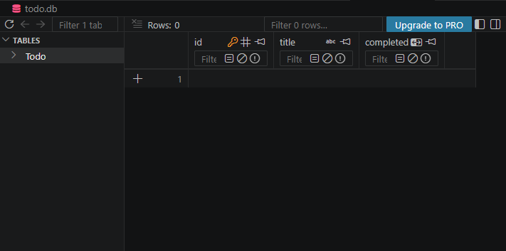
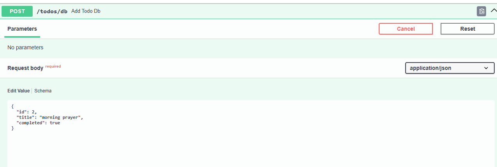
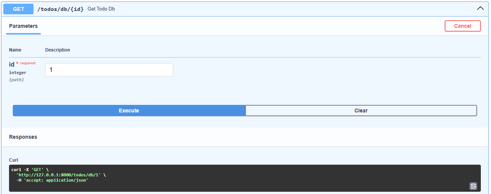
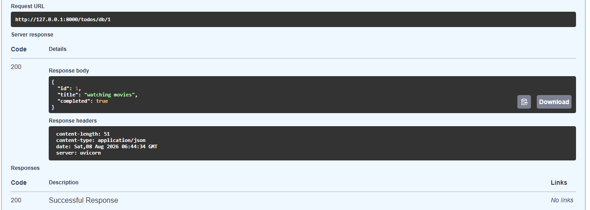
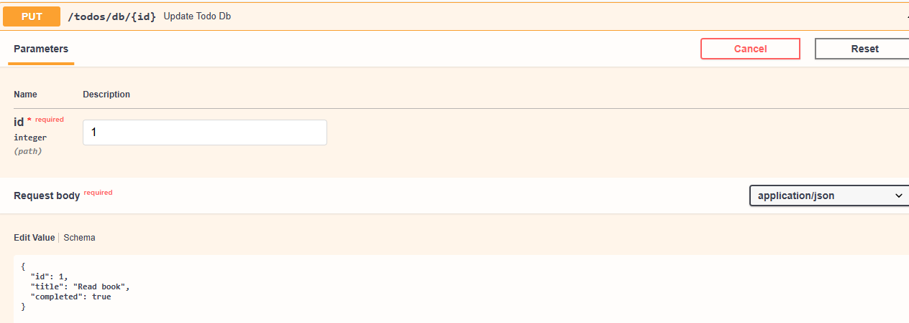
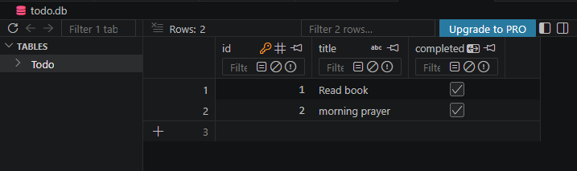
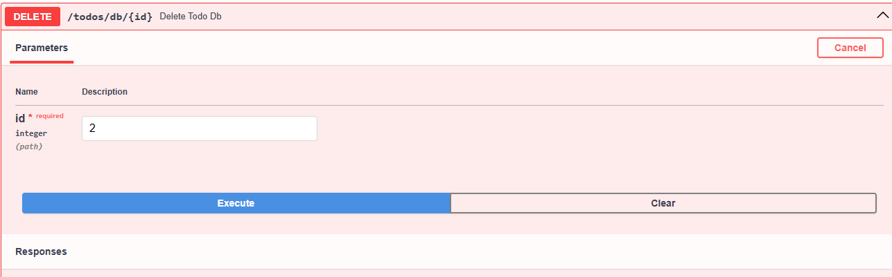
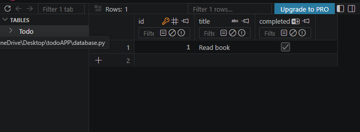

FASTAPI Todo Application
This project demonstrates a basic Todo application using FASTAPI. Each user can Get,Post,update and delete the todo items.
Project & App Setup
Create a FastAPI To-Do project and set up the required environment.
Create FastAPI To-Do Project
Terminal
python -m venv venv
venv\Scripts\activate
pip install fastapi uvicorn
Create main.py
Create a file named main.py in the project folder.
main.py
from fastapi import FastAPI
app = FastAPI()
@app.get("/")
def root():
return {"message":"ok"}
Start the FastAPI application using the following command:
Terminal
uvicorn main:app --reload
Open Swagger
After starting the FastAPI server, open the Swagger documentation:
http://127.0.0.1:8000/docs
Create Database
SQLite is used as the database for the FastAPI Todo application. SQLAlchemy is used to create the database connection and manage communication between FastAPI and the SQLite database.
Project Structure
Basic project structure for the FastAPI Todo application:
Todo_project/
│
├── .venv/
├── main.py
├── database.py
├── models.py
├── schemas.py
└── todo.db
Configure Database Connection
database.py
from sqlalchemy import create_engine
from sqlalchemy.orm import declarative_base, sessionmaker
DATABASE_URL = "sqlite:///./todo.db"
engine = create_engine(
DATABASE_URL,
connect_args={"check_same_thread": False}
)
SessionLocal = sessionmaker(
autocommit=False,
autoflush=False,
bind=engine
)
Base = declarative_base()
Todo Model
The To-Do model defines the structure of tasks created and managed through the FastAPI API.
Todo_app/models.py
from pydantic import BaseModel
class Todo(BaseModel):
id:int
title:str
completed:bool
class Config:
from_attributes = True
Create Todo Table
The Todo table is created using SQLAlchemy. It stores the Todo ID, title, description, and completion status.
schemas.py
from sqlalchemy import Column, Integer, String, Boolean
from database import Base
class Todo(Base):
__tablename__ = "Todo"
id = Column(Integer, primary_key=True, index=True)
title = Column(String)
completed = Column(Boolean,default=False)
Create Database Tables
The Base.metadata.create_all() function creates the database tables defined in the SQLAlchemy models.
main.py
from fastapi import FastAPI
from sqlalchemy.orm import Session
import schemas
from models import Todo
from database import engine, SessionLocal
app=FastAPI()
schemas.Base.metadata.create_all(bind=engine)
def get_db():
db = SessionLocal()
try:
yield db
finally:
db.close()
......

Steps For Creating FASTAPI TODO List
A simple Todo API is created using FastAPI. Users can create, view, update, and delete Todo items using REST API methods.
POST - Create Todo Item
The POST method is used to create a new Todo item.
main.py
from fastapi import Depends
.....
# Add todo to database
@app.post("/todos/db")
def add_todo_db(todo: Todo, db: Session = Depends(get_db)):
new_todo = schemas.Todo(
id=todo.id,
title=todo.title,
completed=todo.completed
)
db.add(new_todo)
db.commit()
db.refresh(new_todo)
return {
"message": "Todo Added Successfully",
"data": new_todo
}
Request Body
{
"title": "Learn FastAPI",
"completed": false
}
The new Todo item is added to the Todo list.


GET - View Todo Items
The GET method is used to retrieve Todo items from the API.
main.py
# Get todo from database
@app.get("/todos/db/{id}")
def get_todo_db(id: int, db: Session = Depends(get_db)):
todo = db.query(schemas.Todo).filter(
schemas.Todo.id == id
).first()
if todo is None:
return {"message": "Todo not found"}
return todo


PUT - Update Todo Item
The PUT method is used to update an existing Todo item.
main.py
# Update todo in database
@app.put("/todos/db/{id}")
def update_todo_db(
id: int,
todo: Todo,
db: Session = Depends(get_db)
):
db_todo = db.query(schemas.Todo).filter(
schemas.Todo.id == id
).first()
if db_todo is None:
return {"message": "Todo not found"}
db_todo.title = todo.title
db_todo.completed = todo.completed
db.commit()
db.refresh(db_todo)
return {
"message": "Todo Updated Successfully",
"data": db_todo
}


DELETE - Delete Todo Item
The DELETE method is used to remove a Todo item.
main.py
# Delete todo from database
@app.delete("/todos/db/{id}")
def delete_todo_db(
id: int,
db: Session = Depends(get_db)
):
db_todo = db.query(schemas.Todo).filter(
schemas.Todo.id == id
).first()
if db_todo is None:
return {"message": "Todo not found"}
db.delete(db_todo)
db.commit()
return {
"message": "Todo Deleted Successfully"
}

